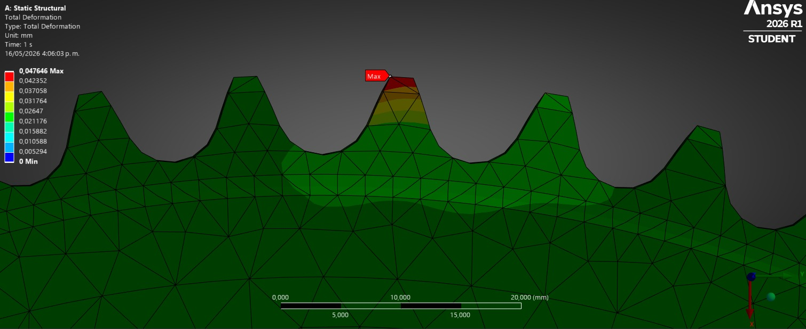

Proyecto destacado
Catarina híbrida metal–fibra de carbono para bicicleta de pista
Objetivo y concepto
Quería una catarina de pista que fuera resistente y también llamativa. Separé las dos funciones:
Función mecánica: los dientes y un esqueleto estructural en aluminio 7075-T6. El metal debía cumplir por sí solo con la resistencia a fatiga y al desgaste.
Función estética: una cascarilla de fibra de carbono sobre el esqueleto, que da el aspecto visual característico del material sin tener un papel estructural principal.
Requisitos
- Transmisión de 58 dientes con cadena de 1/2" × 1/8".
- Montaje con BCD de 144 mm y 5 tornillos.
- Vida útil de 15.000 km.
- Alta resistencia a fatiga y al desgaste.
- Perfil de diente estándar de pista.
Geometría
Calculé el perfil del diente con las relaciones de ASME B29.1, a partir de la cadena (paso de 12,7 mm y rodillo de 7,92 mm).
| Parámetro | Resultado |
|---|---|
| Diámetro primitivo | 234,6 mm |
| Diámetro de raíz | 226,7 mm |
| Diámetro exterior | 240 mm |
| Espesor de diente | 2,95 mm |
| Diámetro de alivio | 202,4 mm |
Cargas de diseño
Modelé un sprint con 1.600 W de potencia pico a 75 km/h, rueda 700c y piñón de 14 dientes.
- Carga pico de 1.359 N para la verificación estática.
- Carga nominal de 906 N para la verificación por fatiga.
- Reparto asumido de carga entre dientes: 70/30.
Validación por elementos finitos
Para contrastar el cálculo analítico modelé un sector de dientes en Ansys con una carga de 951 N sobre el diente más cargado.


Trabajo futuro
- Simulación dinámica de la transmisión.
- Fabricación de un prototipo y ensayo en banco.
- Refinamiento de la malla y estudio de convergencia.
- Evaluación del desgaste y del método de unión entre aluminio y fibra de carbono.
Herramientas
Autodesk Inventor · Ansys · Teoría de Lewis · ASME B29.1 · Análisis de fatiga